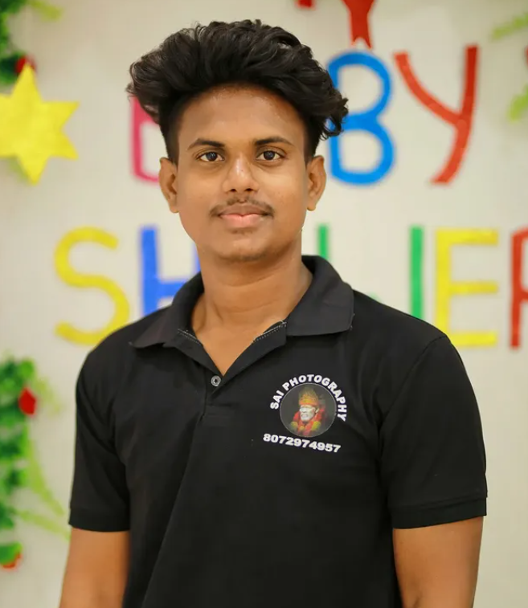

The Artist Behind the Lens

Meet Sundaramoorthy
With over 8 years of professional experience, I believe that photography is more than just taking pictures; it's about telling a story and preserving a moment that will never happen again. My approach is rooted in honesty, creativity, and a deep appreciation for the beauty found in real emotions.
Based in the beautiful landscapes of Southern India, I bring a cinematic touch to every shoot, whether it's the grandeur of a wedding or the intimate moments of a baby session.
Avudaiyarkovil | Karaikudi | Aranthangi